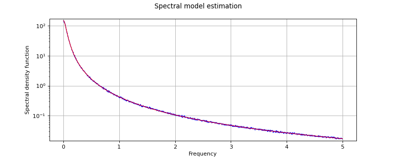

WelchFactory¶
(Source code, png)

- class WelchFactory(*args)¶
Welch estimator of the spectral model of a stationary process.
Refer to Estimation of a spectral density function.
- Parameters:
- window
FilteringWindows The filtering window model.
By default, the filtering window model is the Hann model.
- blockNumberint
Number of blocks.
By default, blockNumber=1.
- overlapfloat,
 .
. Overlap rate parameter of the segments of the time series.
By default, overlap=0.5.
- window
Notes
Let
 be a multivariate second order stationary process, with zero mean, where
be a multivariate second order stationary process, with zero mean, where  . We only treat here the case where the domain is of dimension 1:
. We only treat here the case where the domain is of dimension 1:  (n=1).
(n=1).If we note
![C(\vect{s}, \vect{t})=\Expect{(X_{\vect{s}}-m(\vect{s}))\Tr{(X_{\vect{t}}-m(\vect{t}))}}]() its covariance function, then for all
its covariance function, then for all ![(i,j), C^{stat}_{i,j} : \Rset^n \rightarrow \Rset^n]() is
is  (ie
(ie ![\int_{\Rset^n} |C^{stat}_{i,j}(\vect{\tau})|\di{\vect{\tau}}\, < +\infty]() ), with
), with ![C^{stat}(\vect{\tau}) = C(\vect{s}, \vect{s}+\vect{\tau})]() as this quantity does not depend on
as this quantity does not depend on  .
.The bilateral spectral density function
 exists and is defined as the Fourier transform of the covariance function
exists and is defined as the Fourier transform of the covariance function  :
:![\forall \vect{f} \in \Rset^n, \,S(\vect{f}) = \int_{\Rset^n}\exp\left\{ -2i\pi <\vect{f},\vect{\tau}> \right\} C^{stat}(\vect{\tau})\di{\vect{\tau}}]()
where
![\mathcal{H}^+(d) \in \mathcal{M}_d(\Cset)]() is the set of d-dimensional positive definite hermitian matrices.
is the set of d-dimensional positive definite hermitian matrices.The Welch estimator is a non parametric estimator based on the segmentation of the time series into blockNumber segments possibly overlapping (size of overlap overlap). The length of each segment is deduced.
Examples
Create a time series from a stationary second order process:
>>> import openturns as ot >>> myTimeGrid = ot.RegularGrid(0.0, 0.1, 2**8) >>> model = ot.CauchyModel([5.0], [3.0]) >>> gp = ot.SpectralGaussianProcess(model, myTimeGrid) >>> myTimeSeries = gp.getRealization()
Estimate the spectral model with WelchFactory:
>>> mySegmentNumber = 10 >>> myOverlapSize = 0.3 >>> myFactory = ot.WelchFactory(ot.Hann(), mySegmentNumber, myOverlapSize) >>> myEstimatedModel_TS = myFactory.build(myTimeSeries)
Change the filtering window:
>>> myFactory.setFilteringWindows(ot.Hamming())
Methods
build(*args)Estimate the spetral model.
Accessor to the block number.
Accessor to the object's name.
Accessor to the FFT algorithm used for the Fourier transform.
Accessor to the filtering window.
getId()Accessor to the object's id.
getName()Accessor to the object's name.
Accessor to the overlap rate.
Accessor to the object's shadowed id.
Accessor to the object's visibility state.
hasName()Test if the object is named.
Test if the object has a distinguishable name.
setBlockNumber(blockNumber)Accessor to the block number.
setFFTAlgorithm(fft)Accessor to the FFT algorithm used for the Fourier transform.
setFilteringWindows(window)Accessor to the filtering window.
setName(name)Accessor to the object's name.
setOverlap(overlap)Accessor to the block number.
setShadowedId(id)Accessor to the object's shadowed id.
setVisibility(visible)Accessor to the object's visibility state.
buildAsUserDefinedSpectralModel
- __init__(*args)¶
- build(*args)¶
Estimate the spetral model.
- Available usages:
build(myTimeSeries)
build(myProcessSample)
- Parameters:
- myTimeSeries
TimeSeries One realization of the process.
- myProcessSample
ProcessSample Several realizations of the process.
- myTimeSeries
- Returns:
- mySpectralModel
UserDefinedSpectralModel The spectral model estimated with the Welch estimator.
- mySpectralModel
- getBlockNumber()¶
Accessor to the block number.
- Returns:
- blockNumberint
The number of blocks used in the Welch estimator.
By default, blockNumber = 1.
- getClassName()¶
Accessor to the object’s name.
- Returns:
- class_namestr
The object class name (object.__class__.__name__).
- getFFTAlgorithm()¶
Accessor to the FFT algorithm used for the Fourier transform.
- Returns:
- fftAlgo
FFT The FFT algorithm used for the Fourier transform.
- fftAlgo
- getFilteringWindows()¶
Accessor to the filtering window.
- Returns:
- filteringWindow
FilteringWindows The filtering window used.
By default, the
Hannone.
- filteringWindow
- getId()¶
Accessor to the object’s id.
- Returns:
- idint
Internal unique identifier.
- getName()¶
Accessor to the object’s name.
- Returns:
- namestr
The name of the object.
- getOverlap()¶
Accessor to the overlap rate.
- Returns:
- overlapfloat, .
The overlap rate of the time series.
By default, overlap = 0.5.
- overlapfloat,
- getShadowedId()¶
Accessor to the object’s shadowed id.
- Returns:
- idint
Internal unique identifier.
- getVisibility()¶
Accessor to the object’s visibility state.
- Returns:
- visiblebool
Visibility flag.
- hasName()¶
Test if the object is named.
- Returns:
- hasNamebool
True if the name is not empty.
- hasVisibleName()¶
Test if the object has a distinguishable name.
- Returns:
- hasVisibleNamebool
True if the name is not empty and not the default one.
- setBlockNumber(blockNumber)¶
Accessor to the block number.
- Parameters:
- blockNumberpositive int
The number of blocks used in the Welch estimator.
- setFFTAlgorithm(fft)¶
Accessor to the FFT algorithm used for the Fourier transform.
- Parameters:
- fftAlgo
FFT The FFT algorithm used for the Fourier transform.
- fftAlgo
- setFilteringWindows(window)¶
Accessor to the filtering window.
- Parameters:
- filteringWindow
FilteringWindows The filtering window used.
- filteringWindow
- setName(name)¶
Accessor to the object’s name.
- Parameters:
- namestr
The name of the object.
- setOverlap(overlap)¶
Accessor to the block number.
- Parameters:
- blockNumberint, .
The overlap rate of the times series.
- blockNumberint,
- setShadowedId(id)¶
Accessor to the object’s shadowed id.
- Parameters:
- idint
Internal unique identifier.
- setVisibility(visible)¶
Accessor to the object’s visibility state.
- Parameters:
- visiblebool
Visibility flag.


{kind=link}